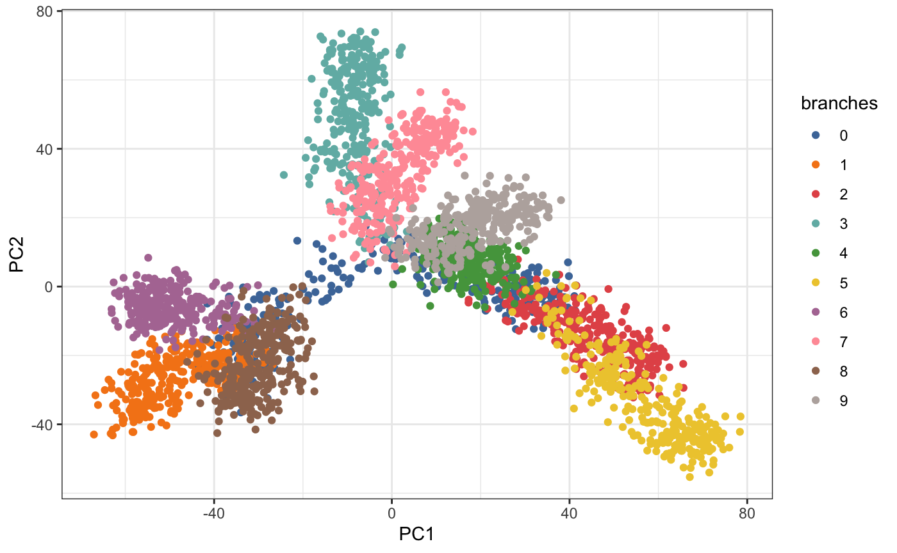
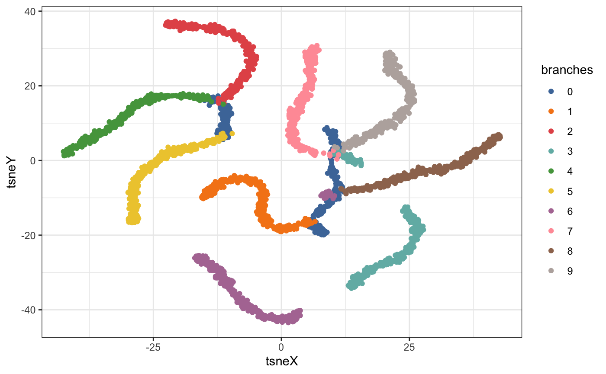

The liminal R package is designed to help you understand and interrogate non-linear dimension reduction results via the (grand) tour and linked graphics. It offers two main functions that are useful for exploring high-dimensional datasets, limn_tour() and limn_tour_link(). Both of these functions create interactive visualisations that are embedded in either the RStudio Viewer pane or on a web browser through shiny (Chang et al. 2021).
Touring high-dimensional space
A tour is a dynamic visualisation that is displayed as a smooth animation of low-dimensional projections. A high dimensional dataset is projected onto a sequence of lower dimensional targets (also called bases) enabling the tour to explore the subspace of all lower dimensional projections. The way that targets are generated is called the tour path, in liminal we default to using the grand tour, which generates random Gaussian targets, although any tour path available in the tourr package can be used (Wickham et al. 2011; Wickham and Cook 2021). For more details, see Lee et al. (2021) for a review of tour methods and Wickham et al. (2011) for their implementation in R.
Let’s take a look at an example, which has been adapted from the phateR package (Srinivasan 2021; Moon et al. 2019)..
The liminal package comes with a built in data.frame which is a high-dimensional tree structured dataset called fake_trees. It consists of 3000 observations over 100 numeric variables. The tree can really be embedded in 2 dimensions and has 10 branches.
First, let’s generate principal components:
library(liminal)
data("fake_trees")
pcs <- prcomp(fake_trees[, -ncol(fake_trees)])
# var explained
head(cumsum(pcs$sdev / sum(pcs$sdev)))
#> [1] 0.05569726 0.09768259 0.13586130 0.17200716 0.20405094 0.23398570And visualise the results as scatter plot by augmenting the original data:
library(ggplot2)
fake_trees <- dplyr::bind_cols(fake_trees, as.data.frame(pcs$x))
ggplot(fake_trees, aes(x = PC1, y = PC2, color = branches)) +
geom_point() +
scale_color_manual(values = limn_pal_tableau10())
We see some separation of the branches in first two principal components, however, we can’t see each of the branches clearly or their relation to each other.
We can tour the components that represent most of the variation in the data to get a sense of the underlying structure.
The following code generates a shiny application, that provides an interface to the tour:
# this loads a shiny app on the first fifteen PCs
limn_tour(fake_trees, cols = PC1:PC15, color = branches)The interface consists of the tour view which is a dynamic scatterplot and an axis view which corresponds to magnitude and direction of the generated targets.

From the tour view, we can see that the blue branch is hidden (after highlighting it and letting the animation play) and forms the backbone of the tree.
Brushing on the tour view is activated with the shift key plus a mouse drag. It will highlight points that fall inside the brush and pause the current view.
There are several additional interactions available on this view: * There is a play button, that when pressed will start the tour. * There is also a text view of the half range which is the maximum squared Euclidean distance between points in the tour view. The half range is a scale factor for projections and can be thought of as a way of zooming in and out on points. It can be dynamically modified by scrolling (via a mouse-wheel). To reset double click the tour view. * The legend can be toggled to highlight groups of points with shift+mouse-click. Multiple groups can be selected in this way. To reset double click the legend title.
Adding non-linear embeddings
We can also compare this to t-SNE embedding run with default settings:
set.seed(2099)
tsne <- Rtsne::Rtsne(dplyr::select(fake_trees, dplyr::starts_with("dim")))
tsne_df <- data.frame(tsneX = tsne$Y[,1],
tsneY = tsne$Y[,2])
ggplot(tsne_df, aes(x = tsneX, y = tsneY, color = fake_trees$branches)) +
geom_point() +
scale_color_manual(values = limn_pal_tableau10())
The topology is a little messed up as the blue branch is now broken into two distinct pieces.
We can see where our embedding is different via a linked tour:
limn_tour_link(embed_data = tsne_df,
tour_data = fake_trees,
cols = PC1:PC10, # tour columns to select
color = branches # variable to highlight across both view, can come for either data frames
)This function requires two tables that will be linked together in separate views. The tour interface is the same as above, except now brushing on the tour view will highlight points on the right hand side scatter plot. The right hand side scatterplot view is an interactive scatterplot.
Brushing on the right view is activated via click and drag movements.

We can see from brushing on the right, where t-SNE has broken up the global structure in the data and distorted the distance between points. For either interface, you can assign the results to an R object, that will return a list consisting of the selected basis (target) and the brushing bounding boxes.
res <- limn_tour_link(embed_data = tsne_df,
tour_data = fake_trees,
cols = PC1:PC10, # tour columns to select
color = branches # variable to highlight across both view, can come for either data frames
)References
Chang, Winston, Joe Cheng, JJ Allaire, Carson Sievert, Barret Schloerke, Yihui Xie, Jeff Allen, Jonathan McPherson, Alan Dipert, and Barbara Borges. 2021. Shiny: Web Application Framework for R. https://shiny.rstudio.com/.
Lee, Stuart, Dianne Cook, Natalia da Silva, Ursula Laa, Earo Wang, Nick Spyrison, and H Sherry Zhang. 2021. “A Review of the State-of-the-Art on Tours for Dynamic Visualization of High-Dimensional Data,” April. https://arxiv.org/abs/2104.08016.
Moon, Kevin R, David van Dijk, Zheng Wang, Scott Gigante, Daniel B Burkhardt, William S Chen, Kristina Yim, et al. 2019. “Visualizing Structure and Transitions in High-Dimensional Biological Data.” Nature Biotechnology 37 (12): 1482–92. https://doi.org/10.1038/s41587-019-0336-3.
Srinivasan, Krishnan. 2021. PhateR: PHATE - Potential of Heat-Diffusion for Affinity-Based Transition Embedding. https://CRAN.R-project.org/package=phateR.
Wickham, Hadley, and Di Cook. 2021. Tourr: Tour Methods for Multivariate Data Visualisation. https://github.com/ggobi/tourr.
Wickham, Hadley, Dianne Cook, Heike Hofmann, and Andreas Buja. 2011. “tourr: An R Package for Exploring Multivariate Data with Projections.” Journal of Statistical Software 40 (2): 1–18. https://www.jstatsoft.org/v40/i02/.